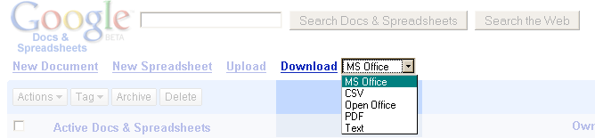
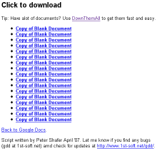

Google Doc Download GM Script (Updated May 23rd, 2007)
Users of Google's document and spreadsheet web service can easily access and manage their important documents in one central location.
They still would like to be able to back up and archive their files on their own systems. Unfortunately that isn't so easy. You would
have to open each document and choose to export them individually and becomes quite time consuming if you have more than a handful of
documents. 
The Google Download Script was written to help streamline this process when combined with a download manager like DownThemAll.
How it works
Google Doc Download is written as a Grease Monkey script for use in Firefox. Make sure you have both of these installed before you try to use the script. Once installed, the script will run anytime you access your Google Docs control panel. Here is what you will see.

Just navigate to the document list that you wish to download, select a format, and click download. You now have a list of links to download all of the documents from the current section (All, Active, Starred, Speadsheets, Documents, etc) in google docs that you are viewing. Links will be generated for all documents in that section (even if the lists spans multiple pages). The script does not look to see what documents you select below, it just generates links for every document.

Now use DownThemAll to mass download your
documents! You have now mass downloaded your documents from google, can now archive them to the medium of your choosing and place
it under your mattress so you can sleep at night knowing that if google exploded while you were sleeping you would still have your files when
you wake up.

Download it
Click here to download & install 
Updates
May 23rd, 2007: The script was updated to reflect a tweak in the html of Google Docs. Please update your script.
I'll probably convert this to an extension in the near future so that the update process is more streamlined.
Bugs & Contact
Please Note: Certain file formats are not supported for either documents or spreadsheets. Whenever this is the case you will download the next closest format instead. For instance, the text and CSV formats are supported for spreadsheets, but not for documents. In these cases you will download documents in RTF format instead.
This script can become temperamental depending on how Google decides to upgrade their code. GDD gathers link information by scraping the javascript code and places the download link with a long xpath expression. So if the page html or javascript changes significantly then this script is liable to cease functioning. Chances are I will find out pretty quickly since I use the script myself but you can always drop me a line at gdd at 1st-soft.net.
This is also my first Grease Monkey script, so let me know if I messed up something in the gm configuration as well.

Google Doc Download was written by Peter Shafer, student developer, in April 2007. Contact: gdd at 1st-soft.net
Thanks to F.D. Cleary for helping me debug the script. 
Emoticons originate from the Something Awful forums. 
To do
Create an extension. Once this has been tested enough in the wild and I know Google's code doesn't change dramatically that often, then I'll convert this into a Firefox browser extension.
Add other google docs hacks to the script. I've been messing around with google docs code trying to find ways to only view published or unpublished documents. I think google docs is a great tool and I'll continue to seek ways to improve the user experience through grease monkey.
License

This software is licensed under the CC-GNU GPL.